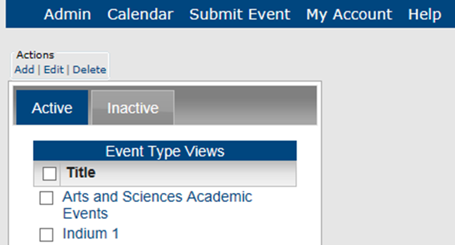
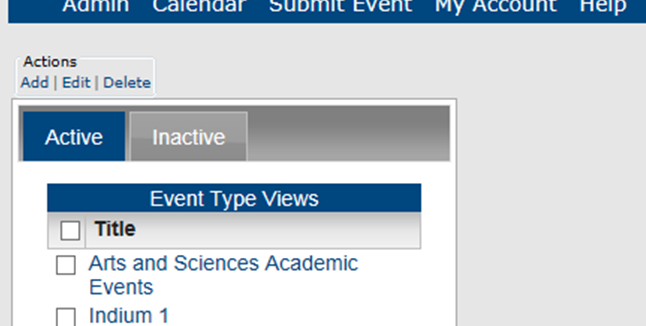
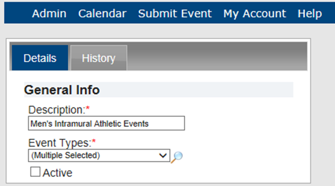

Note: You can only add active event types to an Event Type View. You may first need to activate an event type so that you can add it to a view. See Also: Activating an Event Type
An Event Type View is a grouping or collection of event types to help your guests or users to search for multiple event types in a single step, rather than conducting multiple searches for different event types. For example, if you are managing calendars for a university campus, you might group the event types of Women’s Swimming, Women’s Track and Field, Women’s Soccer, and Women’s Basketball under the Event Type View of “Women’s Athletic Events.” This topic guides you in creating, editing, deleting and activating and inactivating Event Type Views and viewing Event Type View history..
| Note: You can only add active event types to an Event Type View. You may first need to activate an event type so that you can add it to a view. See Also: Activating an Event Type |
1. On the Admin menu, point to Configuration > Event Type Views. The Event Type Views page opens on the Active tab, listing all active Event Type Views in Master Calendar.

2. Under Actions, click Add. The Adding Event Types page opens on the Details tab.

3. In the Description field, enter a description for the Event Type View.
4. On the Event Types dropdown list, do one of the following:

5. Click Add. The Event Type View is added as an active item in Master Calendar.
1. On the Admin menu, point to Configuration > Event Type Views. The Event Type Views page opens on the Active tab, listing all active Event Type Views in Master Calendar.

2. To edit an Event Type View, select it on the Active or Inactive tab.

3. To delete an Event Type View, locate it on the Active or Inactive tab and select select (one or more) Event Type Views to be deleted. To select all Event Type Views on the currently opened page for deletion in a single step, select Title. If you have multiple pages of views to delete, you must repeat this entire process on each page.
Page tags: article:topic